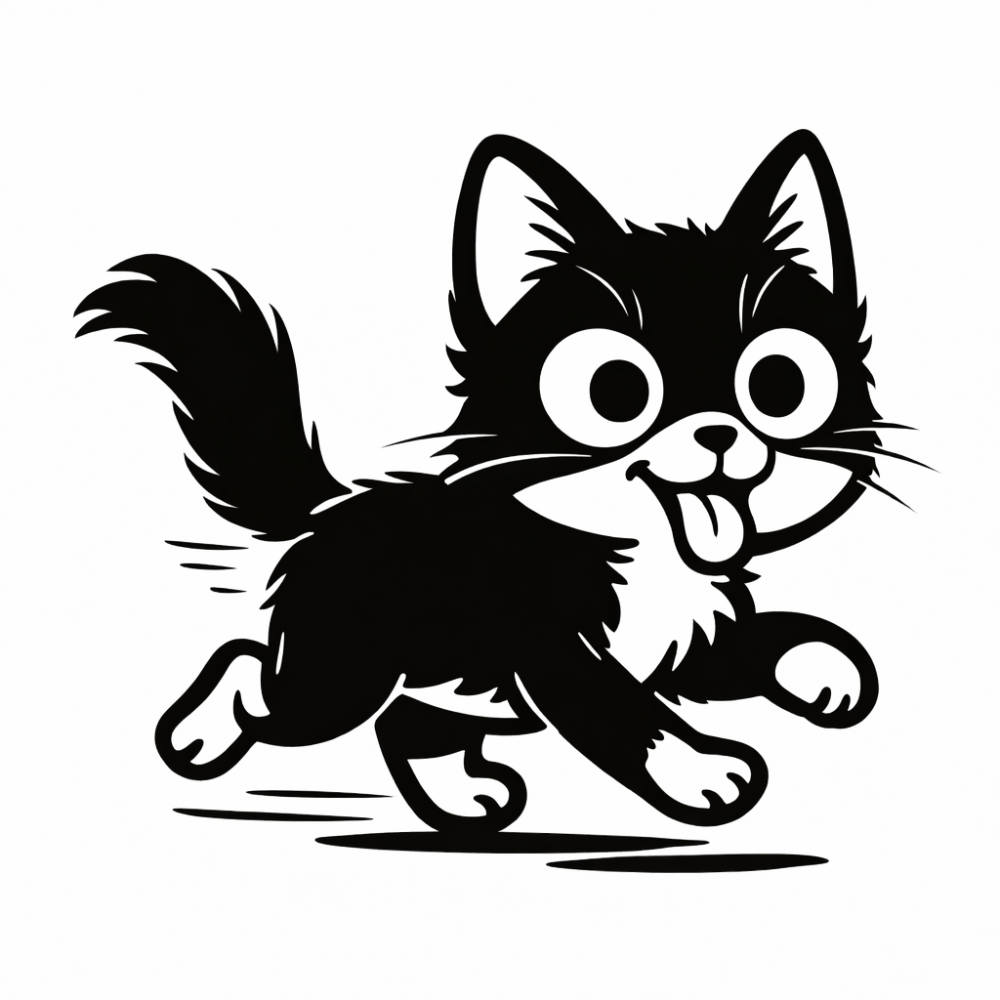
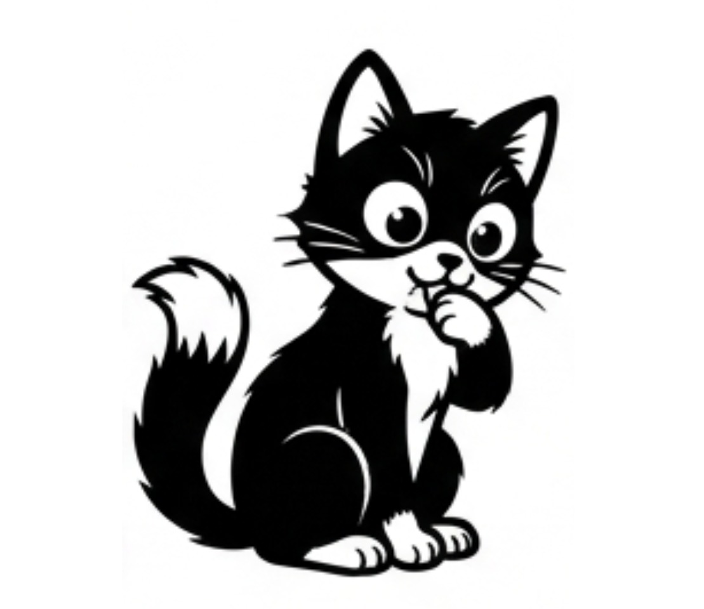
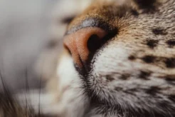

📌 この記事でわかること

📷 くつろぐ猫（Created with Ai）猫のヒゲ（洞毛）は普通の毛とは根本的に構造が異なります。毛根が顔の深い部分にまで達し、その周囲には神経と血管が密集しているため、わずかな空気の流れや物との接触を高い精度で感じ取ることができます。暗闇での障害物検知や、狭い隙間を通れるかどうかの判断にも役立っているとされ、この「見えないものを感じ取る力」こそが、ヒゲが世界各地で神秘的な存在として扱われてきた背景にもつながっています。
古代エジプトでは猫は神聖な存在とされ、家庭や豊穣、守護を司る女神バステトが特に崇拝されていました。エジプトの人々は猫のヒゲをお守りとして扱い、邪悪な霊を遠ざけ、家に幸運をもたらすものと信じていたといわれています。
一方、ケルトの伝承では猫は人間の世界と異界をつなぐ存在とされ、ヒゲは霊的な世界を行き来する力の象徴とされました。長く健康なヒゲを持つ猫は直感が鋭く、人の運命を導いてくれる存在と考えられていたそうです。
猫のヒゲにまつわる幸運の言い伝えは、エジプトやケルトに限らず世界各地に存在します。自然に抜け落ちた猫のヒゲを財布に入れておくとお金に困らない、という話や、拾ったヒゲを大切に保管する習慣が伝えられている地域もあります。ある地域ではお守りとして持ち歩く習慣があり、別の地域では観葉植物の根元に置くと縁起が良いとされるなど、猫が古くから人々の生活や信仰と深く関わってきたことがうかがえます。
英語圏には「the cat's whiskers（猫のヒゲ）」という表現があり、「最高のもの」「一番素晴らしいもの」という意味で使われます。「the bee's knees（蜂の膝）」や「the cat's pajamas（猫のパジャマ）」と同じく、何かを褒めるときの言い回しの一つです。
また「by a whisker（ヒゲ一本差で）」は「ギリギリで」「紙一重で」という意味で使われます。猫のヒゲの細さや繊細さが、危機一髪の状況や僅差の勝利を象徴する表現として定着してきました。

📷 猫のヒゲのアップ（Photo: pexels）現代でも猫のヒゲは魔術やお守りとして使われることがあります。特に黒猫のヒゲは「邪悪なものから身を守る」力があるとされ、旅のお守りや、見えない危険から身を守るためのチャームとして持ち歩く人もいます。色によっても意味が異なると考えられており、それぞれ次のような解釈があります。
| ヒゲの色 | 込められているとされる意味 |
|---|---|
| 白 | 純粋さ・癒し |
| 茶 | 地に足をつける・安定 |
| 黒 | 守護・ネガティブなものを遠ざける |
ただし、折れたヒゲや抜けたヒゲを見つけると「不運の前兆」と考える人もいるため、ヒゲの状態にも注目が集まります。
猫のヒゲは頬だけでなく、目の上、あご、前足の裏側など、複数の場所に生えています。それぞれの位置のヒゲが異なる役割を担っており、目の上のヒゲはまばたきの反射を助け、前足のヒゲは物をつかむ際の距離感をつかむのに役立っているとされています。
猫のヒゲは感情によって向きが変化するともいわれています。リラックスしているときは横向きに自然な状態を保ち、興味や興奮を感じているときは前方にピンと張り出す動きを見せることがあります。反対に、後方に引かれているときは警戒や不安を示している場合があるとされ、表情筋と連動して動く「感情表現の一部」としても観察されています。

📷 表情豊かな猫（Photo: pexels）猫が狭い隙間を通れるかどうかを瞬時に判断できるのは、ヒゲの幅が体幅とほぼ一致しているためだといわれています。ヒゲの先端が壁や物に触れる感覚から、通り抜けられるかどうかを事前に察知していると考えられています。
残念ながら、「猫のヒゲが幸運をもたらす」という科学的根拠は今のところありません。しかし、猫のヒゲがいかに繊細で重要な役割を果たしているかは、動物行動学や獣医学の分野でも明らかになっています。ヒゲは猫にとって「生きるためのセンサー」であり、ヒゲを切ったり抜いたりすることは、空間認識やバランス感覚に影響を与える可能性があるため避けるべきとされています。
猫は自然にヒゲを1〜2本ずつ抜け替えます。もし家で猫のヒゲを見つけたら、それは「あなたと猫の絆の証」として、そっと大切に保管してみてはいかがでしょうか。世界中の伝説や迷信を知ったうえで、ちょっとした「お守り」として持ち歩けば、日常に小さな幸運や安心感をもたらしてくれるかもしれません。
猫のヒゲは、優れたセンサーとしての科学的な機能と、古今東西の人々が「見えないものを感じ取る力」「守護」「幸運」を託してきた文化的な意味合いを併せ持つ、非常にユニークな体の一部です。科学的な証明はなくとも、猫と人との深い絆や、ヒゲを通じて感じる神秘的なつながりは、今も多くの人の心を惹きつけています。あなたのそばに猫がいるなら、そのヒゲはきっと、あなたにとって特別な「幸運のしるし」になるはずです。